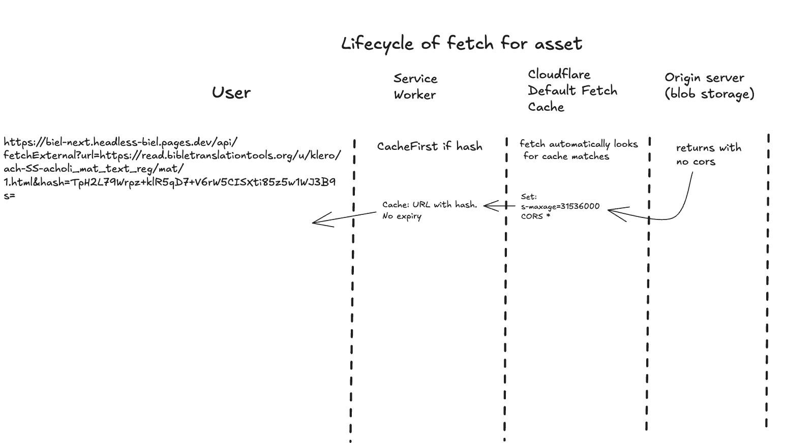
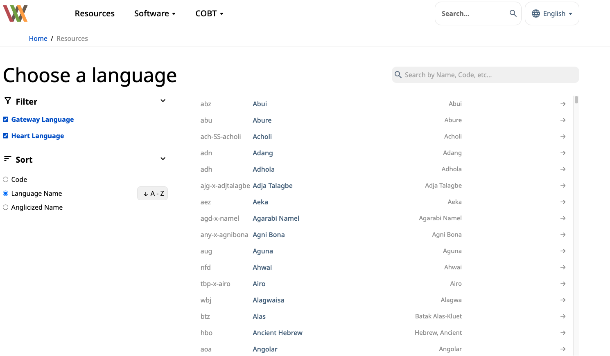

Content is sourced from wordpress using
Apart from Wordpress, there are 2 other data sources
The first is the Public Data Api. /resources queries for all languages that have content that is (show_on_biel+primary) and not missing renderings. /resources/language queries for all "content" and the pre-rendered results of that repo on a per chapter (or per file for tw) basis. /resources/language then queries for each chapter of the each project per request.
The second is Github. For languages that have add'l content store in a "biel_files" repo, these resources are split out for TS on their respective language pages and made avaialbe to always have to download each folder as latest for zip.
Each file in the public data api comes with a hash of its content (I think all are sha256, but it's up to whomever puts the data in the api). This checksum allows for strong caching headers at both the cdn and service worker levels. All fetches for content are proxied through a serverless function (due to cors headers, and populating a shared cache) with maximal caching headers set based on a hash query parameter. She following swim lane for an example of life cycle of a request for content
The public Data API is POST request, which is by default not cacheable on Cloudflare. There are workarounds, and the following logic exists for these.
Overall, the requst for /resources and /resource/{lang} is cached at the CF cdn level using custom Stale while Revalidate logic. Given a a STALE_THRESHOLD and MAX_AGE, the request will use cached but stale data if there is a cache match that younger than MAX_AGE but older than STALE_THRESHOLD. This will fetch in the background to update the stale data. If it's beyond the MAX_AGE, a fresh fetch to origin api is made. Both /resources and /resource/{lang} take a cache-bust query parameter on their routes to force a fresh fetch. (i.e. public data api was updated, adn we want to update the shared cache)
Resource Downloads -> Handled through the DOC API except for source zip material. GL's are fetched stright from wacs. HL's are hand rolled by fetching each source.usfm file that's rendered for each book by of a heart language and pipelining and zipping together.